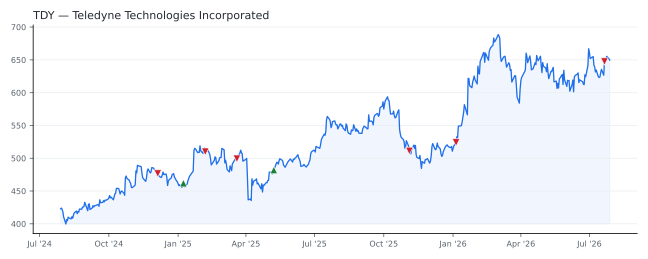

bullish · bearish · n/a — dots: price>SMA10 · SMA10>SMA50 · SMA50>SMA200 · up>down volume (20d)
Technology Hardware · large cap · ★ 1 buyer(s) sit on a committee that regulates this industry
Members who bought TDY earned a dollar-weighted +22.6% from their disclosure dates, versus +17.0% for the S&P 500 over the same holding windows (+5.6% alpha).

▲ green = a disclosed purchase · ▼ red = a disclosed sale (plotted on disclosure date)
Teledyne Technologies Inc provides enabling technologies to sense, analyze and distribute information for industrial growth markets that require advanced technology and high reliability. The firm operates in four segments: Digital Imaging, Instrumentation, Aerospace and Defense Electronics, and Engineered Systems. The Digital Imaging segment, that derives maximum revenue, includes high-performance sensors, cameras and systems, within the visible, infrared and X-ray spectra for use in industrial, government and medical applications, as well as MEMS and high-performance, high-reliability semicon SEARCH, DETECTION, NAVIGATION, GUIDANCE, AERONAUTICAL SYS · website
| Revenue | $6.1B | Net income | $895.7M |
|---|---|---|---|
| Operating income | $1.1B | Diluted EPS | $18.88 |
| Assets | $15.3B | Equity | $10.5B |
| Member | Chamber | Out-performer | Disclosed buys $ | Return on buys |
|---|---|---|---|---|
| Rob Bresnahan | house | — | $8K | +34.8% |
| Rohit Khanna ★ | house | — | $8K | +10.4% |
Disclosed $ figures are bracket midpoints — filings report ranges (e.g. $1,001–$15,000), not exact amounts.
This name produced 0.0% of the ranked funds’ total alpha.
🛒 Newly buying: BRAUN STACEY ASSOCIATES INC (+15%, 0.6% of book)
| Fund | Fund alpha vs SPY | Position | % of book |
|---|---|---|---|
| Sumitomo Mitsui Trust Group, Inc. | +1% | $78M | 0.1% |
| CENTRAL SECURITIES CORP | +4% | $42M | 3.5% |
| Waratah Capital Advisors Ltd. | +8% | $20M | 1.8% |
| BRAUN STACEY ASSOCIATES INC | +15% | $17M | 0.6% |
| KINGDON CAPITAL MANAGEMENT, L.L.C. | +25% | $11M | 1.8% |
| Candelo Capital Management LP | +40% | $6M | 6.4% |
| Fogel Capital Management, Inc. | +10% | $5M | 2.1% |
| VALICENTI ADVISORY SERVICES INC | +9% | $4M | 0.9% |
| SANDLER CAPITAL MANAGEMENT | +20% | $2M | 1.4% |
| US Asset Management LLC | +4% | $0M | 0.3% |
Hedge data: SEC EDGAR 13F · ranked funds beat SPY in >50% of their quarters · fund alpha = mirror-portfolio return minus SPY.